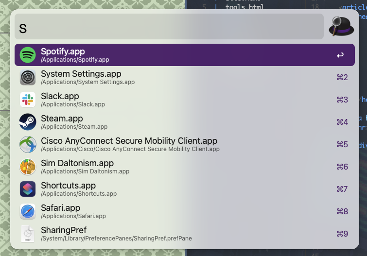
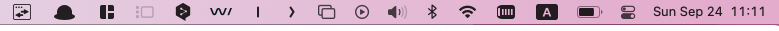
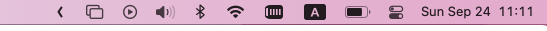
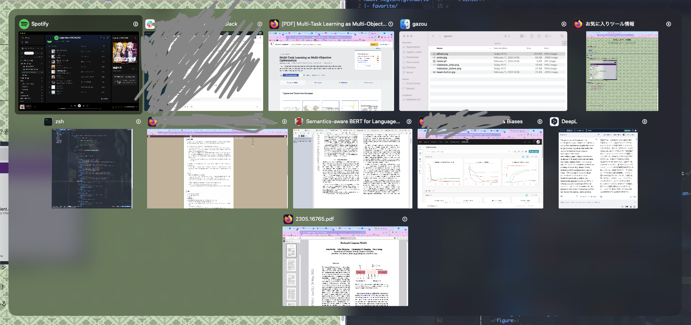
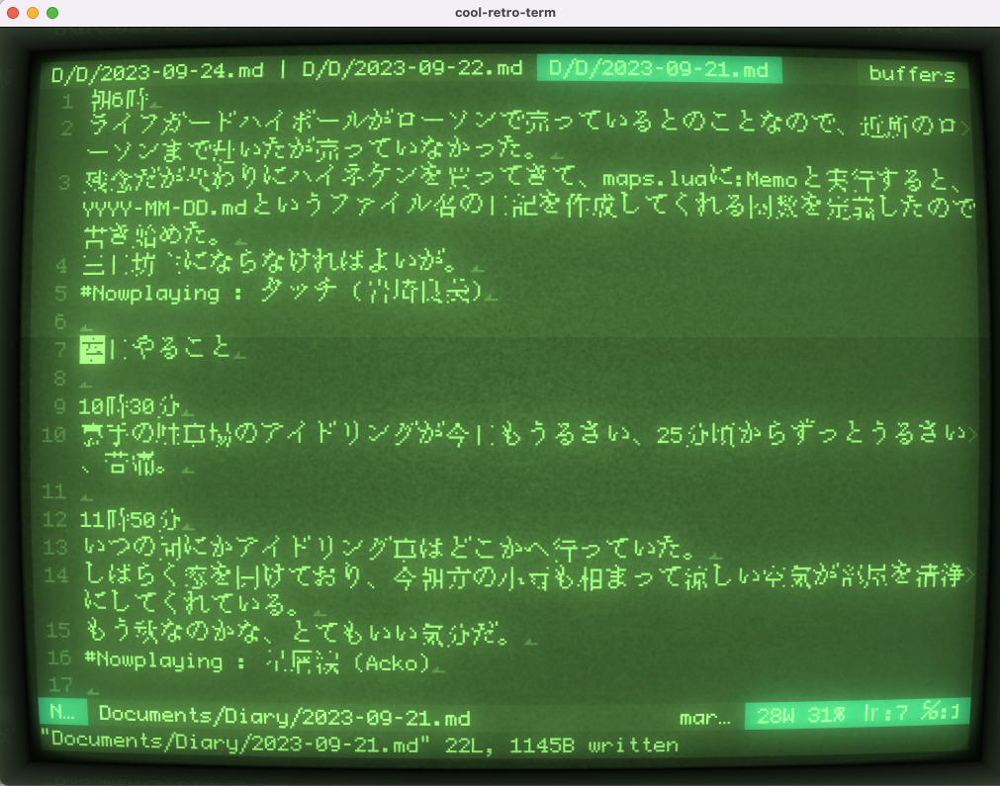

ページ内リンク Mac アプリ その他 トップに戻る Go to top page Mac アプリ Alfred 純正spotlight検索よりもいいのかな？正直どっちでもいい気がしてきた  アプリやファイルのファジーファインドが便利 Hidden Bar Macのメニューバーがきれいになる！  メニューバーがごちゃごちゃしている  メニューバーがきれいになった AltTab  windowsライクなウィンドウ切り替えが便利 cool-retro-term とってもクールなターミナルアプリ  日記書き始めました その他